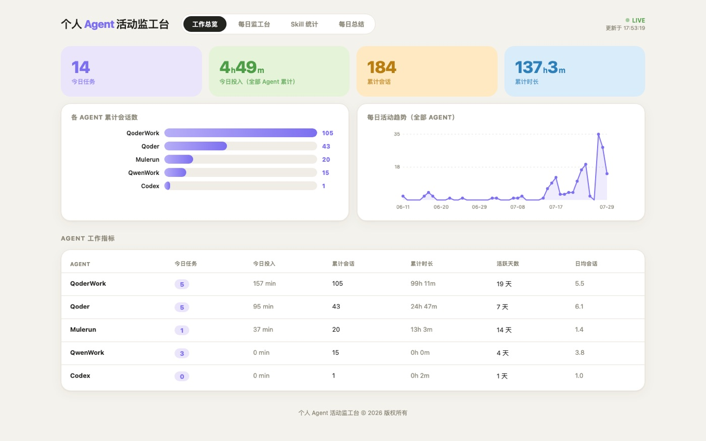

个人 Agent 活动监工台
同时使用 Codex、Qoder、Mulerun 等多个桌面 AI Agent 时，很难知道谁在干活、谁在等我回话。 于是我做了这个本地仪表盘：轮询五个 Agent 的会话数据源（SQLite / JSONL / 目录扫描）， 用“开工 / 等回话 / 摸鱼”三态判定实时状态，并给出会话时间线、Skill 调用排行与每日总结。 服务端仅用 Python 标准库实现，另有 AppKit + WKWebView 的原生窗口版本。
查看详情
5 Agents